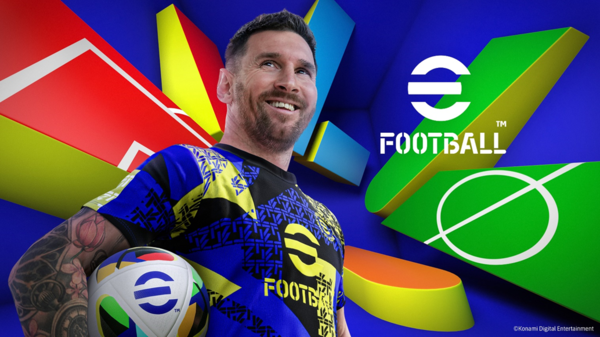
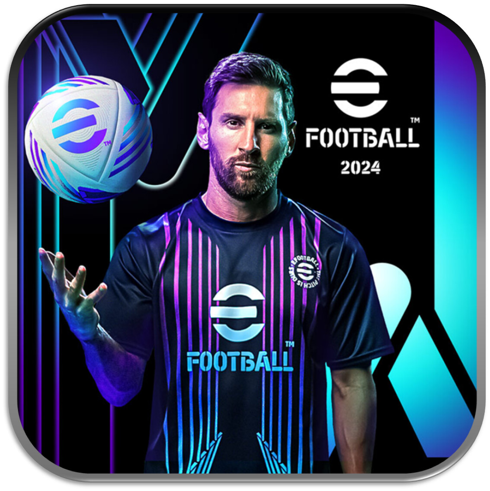

No te olvides de suscribirte.Gracias


eFootball 2024 es un simulador de fútbol desarrollado por Konami. Ofrece una jugabilidad mejorada, gráficos más realistas y mecánicas optimizadas. Incluye equipos licenciados como FC Barcelona, Manchester United y Bayern Múnich, además de eventos en línea y el modo "Dream Team" para crear y gestionar equipos personalizados. Es un juego gratuito (free-to-play) disponible en PC, PlayStation, Xbox, Android e iOS. Aunque ha mejorado en jugabilidad, sigue careciendo de variedad en modos offline y algunas licencias oficiales. ⚽🎮
🔹 Características principales:
Jugabilidad mejorada: Se han ajustado los movimientos de los jugadores, los pases y la defensa para hacer el juego más fluido y realista.
Modos de juego: Incluye partidos amistosos, eventos en línea y la posibilidad de crear y gestionar tu propio equipo en el modo "Dream Team".
Licencias oficiales: Aunque no cuenta con todas las licencias, tiene acuerdos con clubes como el FC Barcelona, Manchester United, Bayern Múnich, Inter de Milán y AC Milan.
Gráficos y animaciones mejoradas:
Se ha trabajado en la fluidez de los movimientos y las expresiones faciales para mayor realismo.
Cross-play limitado: Disponible en PlayStation, Xbox, PC, Android e iOS, aunque con ciertas limitaciones entre plataformas.
🔹 Puntos fuertes:
✔️ Jugabilidad más pulida respecto a ediciones anteriores.
✔️ Gráficos mejorados en consolas y PC.
✔️ Actualizaciones constantes con eventos y desafíos.
🔹 Puntos débiles:
❌ Falta de más modos de juego offline.
❌ Algunas licencias oficiales ausentes.
❌ Puede sentirse repetitivo para jugadores veteranos.
💡 Veredicto: eFootball 2024 ha mejorado en muchos aspectos, pero aún tiene margen para ofrecer una experiencia más completa. Si te gusta el fútbol y buscas un juego gratuito con opciones online, puede valer la pena probarlo. ⚽🎮
Hacer click debajo:
Efootball 2024  